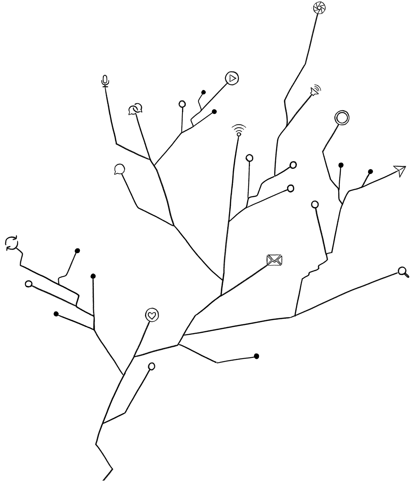

ABSTRACT
This project presents a collaborative field guide documenting “digital ecologies of hope”: instances where media technologies become instruments of collective imagination, care, and becoming across diverse global contexts. Using the aesthetic and organizational principles of naturalist field guides, fourteen researchers contribute “specimens” from their work, ranging from Sudanese youth maintaining educational networks amid civil war to transgender youth documenting voice transitions as acts of collective becoming. Each specimen follows field guide conventions (i.e., classification, habitat, conservation status, field notes, and visual documentation), treating hopeful practices as living systems worthy of documentation and preservation.
Ultimately, by attending to what we call “felt futures”—the emotionally charged visions of possibility that animate research—we seek to demonstrate how research itself can become utopian practice through collaborative authorship and multimodal representation.
Keywords: digital hope, digital resilience, networked care, youth digital practices, critical fabulations, field guide
INTRODUCTION
Media studies finds itself responding to an accelerating cascade of technological crises—from surveillance capitalism and algorithmic bias
to disinformation and democratic erosion—that understandably focuses scholarly attention on how digital systems amplify harm and concentrate power (Arora, 2024; Sebastián-Martín, 2024; Srnicek, 2017; Zuboff, 2019). In such moments, critical frameworks become essential tools for understanding these urgent threats. Yet this necessary hermeneutics of suspicion can obscure other dynamics within the same systems. Alongside exploitation and control, we continue to witness emergent practices of care, imagination, and collective becoming—practices that offer crucial insight into how people navigate technological constraints while opening up possibilities for different futures.
Building on Rosner’s (2018) formulation of critical fabulations, this project attends to these hopeful practices without abandoning critique. By fabulation, we do not mean fabrication. Rather, following Rosner, we use the term to describe methods of reinterpreting and representing real-world practices in ways that surface alternative meanings, suppressed histories, and collective aspirations. Rosner writes of “telling stories that awaken alternative histories” and “shift according to the aspirations of those who absorb them” (p. 119). In extending Hartman’s (2008) concept of “writing against the archive,” she positions fabulation as a strategy of collective meaning-making that surfaces possibilities suppressed by dominant techno-narratives.
Drawing inspiration from naturalist field guides—which serve as "invitation[s] not just to look, but to discover" (Rajendra-Nicolucci & Zuckerman, 2021, p. 7)—our field guide enacts this strategy by weaving together rigorous observation, creative representation, and multimodal storytelling in ways that privilege care and imagination over academic convention. We do so by mapping these critical fabulations in an intentionally accessible, visual artifact, allowing them to take up their space in—and bridging the gap between—public and academic conversations around media. Our field guide also rises up to a critical challenge in contemporary utopias where, rather than only creating fictional maps of the future, there is a pressing need of producing “adequate maps of the present which permit images of a connected but transformed future” (Levitas, 1993, p. 257).
Developed collaboratively within [anonymized lab name]—an international research collective exploring global intersections of media and social justice—this project brings together 14 researchers working across diverse cultural and methodological contexts. Each researcher contributes “specimens” from their work, representing instances where media practices foster agency, resilience, and collective imagination amid intersecting technological, social, political, and economic constraints.
Reflecting our own backgrounds and sites of inquiry, these specimens span diverse contexts: Sudanese youth using social media to maintain educational communities amid civil war; Afro-Brazilian students finding identity affirmation through Instagram; transgender youth documenting voice transitions as acts of collective becoming; among others.
The field guide format afforded us to carefully strike a fine balance between presenting difference and commonality—through identifying, classifying, and juxtaposing these diverse practices. With each entry authentically depicted and annotated with field notes, we embrace the nuances in each context. At the same time, we heed Fenton’s (2008, p. 245) advice of not showcasing hope as “disparate acts of resistance" and rather find a “binding solidarity” that is required to challenge the social and economic injustices on a global scale. We bind these practices and contexts in our field guide, offering a contemporary account on how utopia is collectively realized “into practical political realities” (Fenton, 2008, p. 244).
Each specimen is documented using field guide conventions, including:
- Classification
- Connecting the practice to broader taxonomies of digital hope
- Habitat
- Mapping the sociotechnical conditions enabling its emergence
- Conservation Status
- Assessing resilience against algorithmic and political threats
- Field Notes
- Offering situated, qualitative observations from researchers
- Visual Documentation
- Providing visual cohesion and ethical anonymization through hand-drawn illustrations
As we have argued elsewhere, “doing research is not only a process of inquiry, data collection and analysis, but also an imaginative act that in itself is civic and political” (Authors, forthcoming). We are driven by a belief that researchers must attend to the affective and imaginative orientations embedded in scholarly work—what we term "felt futures,"
the emotionally charged visions of possibility that animate research.
Our field guide project embodies this understanding, treating the documentation of hopeful practices as itself a practice of imagination oriented toward different technological futures. In other words, echoing Benjamin's (2024) charge to dismantle dominant imaginaries and cultivate forms of imagination rooted in solidarity, we are treating hope not merely as an object of study but as a sustainable and equitable way of conducting research itself.
Significantly, our approach also responds to what Arora (2024) identifies as the Western-centrism of techno-pessimism. Drawing on extensive fieldwork across the Global South, she notes that “pessimism is a privilege for those who can afford to live in despair. The rest of the world has little choice but to be optimistic as their future depends on it” (p. 15). Her critique underscores how dominant academic frameworks often marginalize the innovative and resilient ways in which people use technology to sustain community, create opportunity, and build change under precarious conditions perpetuated by systemic inequities. Keenly attuned to this critique, our specimens deliberately center perspectives often marginalized in dominant media studies discourse, particularly from the Global South and diasporic communities.
Rather than defaulting to Western platforms or narratives, the practices we document span a range of sociotechnical environments—from conflict zones and diasporic classrooms to transnational activist networks—revealing how digital hope emerges within, and perhaps because of, conditions of constraint, not outside or in the absence of them.
Finally, this project embraces a collaborative model of knowledge production (Literat et al., 2017). Developing this project collaboratively, our approach mirrors the very practices we document: networks of care, collective meaning-making, and distributed agency. Just as our specimens reveal how digital media enables new forms of collective becoming, our authorship model exemplifies how academic knowledge production might "become otherwise" through more collaborative, inclusive, and equitable structures.
Aspirational AI Self-Imaging

- Classification
- Techno-Social Ritual; Future Self Visualization
- Habitat
- Thrives in youth-focused social media spaces; abundant in TikTok
- Conservation Status
- Flourishing; sensitive to algorithmic climate changes
Field Notes
She stands in the harsh fluorescence of a bathroom, phone raised, purple hoodie, uncertain pose. What catches my attention isn’t the mirror selfie (these are common enough specimens), but what she does next: using Remini to cast herself forward in time, to try on the white coat and stethoscope she’s studying for.
“Using this trend to stay motivated” she writes, but I see something more specific here: a young person using AI not just to dream, but to endure. The scrubs, the stethoscope, the confident smile – these aren’t costumes she’s trying on. They’re coordinates on a map she’s drawing for herself, marking the distance between today’s school bathroom and tomorrow’s hospital corridor.
In this quiet digital ritual, I recognize something raw and honest: how sometimes we need to see it to believe it, to picture ourselves there to keep going. Not a grand statement about technology or society, just one student’s small act of hope-crafting during a long journey. She transforms the mirror from a space of self-scrutiny into one of self-possibility, and shares it – perhaps so others might recognize their own reflections in hers.
In an era often dark with technological dystopias, these emergent practices suggest a different evolutionary path – one where AI tools become instruments not of surveillance but of collective imagination, helping young dreamers bridge the delicate gap between who they are and who they might become.
Documented by: [Anonymized]
Freedom Dreamers: Collective Care in the Cloud

- Classification
- Resistance Ecologies; Youth Freedom Archives; Collective Imagination Networks
- Habitat
- Observed primarily in digital clearings created by youth activists. Specimens often migrate to archival territories. Commonly sighted in bilingual formations, indicating caring environmental adaptations.
- Conservation Status
- Still fragile, reliant on local support, yet exhibiting potential for impactful spread.
Field Notes
Four youth activists appear on a live Zoom session, each speaking with urgency. These aren’t just voices echoing statistics or academic findings about police presence in schools; they are the voices of those directly impacted by the policies they’re challenging. In this teach-in, their stories aren’t only heard—they are felt.
Their presentation is supported by bilingual slides, with each bullet point in both English and Spanish. This choice is intentional, reflecting their awareness of who is most affected by these issues. A reminder that we keep us safe.
As I continue to listen and watch, it becomes clear that this digital space is more than a forum for advocacy—it’s a space for freedom dreaming. These students aren’t just calling for the removal of police from schools; they’re envisioning a future where mutual care replaces fear and control. This virtual setting invites us to imagine a world where we are responsible for each other’s well-being, and where education fosters growth, not surveillance. In a world often shaped by fear-based ideologies, these youth remind us that digital spaces don’t have to replicate that fear—they can become sites of radical hope, where we dream together about the future our children deserve.
The students’ message extends beyond the live broadcast: later archived on social media, it serves as a touchstone for others to revisit, reflect on, and share as they continue organizing. Beyond immediate organizing, digital spaces thus become archives of collective memory, preserving and amplifying the voices leading the charge for a better future.
Documented by: [Anonymized]
Video Testimony and Collective Witnessing
- Classification
- Phenomenological Meaning-Making; Narrative Resilience Networks; Digital Testimony as Collective Hope-Making
- Habitat
- Widely observed across social media platforms, particularly in video formats.
- Conservation Status
- Established position in the social media ecosystem; potential threats from commercial and algorithmic influences that undermine authentic expression.
Field Notes
“YouTube calls it storytime. I like to call it testimony time.” A woman seated on a couch invites her viewers into her lived experience. A fifteen-minute chronicle of her college journey follows, spanning a decade, multiple institutions, and myriad moments that felt like “an epic fail.”
Poor grades. Financial crises. A marriage. Her daughter. A divorce. Night classes. Two jobs. Retaking a class three times. Failing by three points. Taking it again. Hiring a tutor. A sense of purpose: “I just want to take care of my daughter.” A desire, stated with hands clasped and eyes closed: “I made it so far [on my college journey]. This is my dream.”
The narrative is affective and embodied—healing, even. Her legs gave out in gratitude when her final bill was paid. “I did move in faith,” she says, nodding, a slow smile spreading across her face. At the video’s end: photos of her in her cap and gown, hugging her daughter. This public sharing reconstitutes her journey as testimony, grounded in mutuality between creators and viewers.
Comments echo the practice of collective witnessing: “This testimony has blessed me[.] I know it was meant for me.” Another writes, “I’m next! I will succeed in school. I’m going to be debt-free and I will be a helping hand to others! I’ll come back and update you on my testimony.” Perils weathered are re-oriented as possible futures for others who dare to forge similar paths. And so the cycle continues—the creation and sharing of powerful personal narratives among those who recognize that uplifting themselves means little without lifting others up.
Documented by: [Anonymized]
Digital Resilience Networks in Chinese Academic Pressure Ecosystems — The Case of Neijuan (内卷)

- Classification
- Networked Resilience Formation; Digital Coping Rituals
- Habitat
- Native to digital territories frequented by Chinese university students, particularly Weibo, Zhihu, and Douban; most active during examination seasons and late-night hours.
- Conservation Status
- Population robust but vulnerable to habitat disruption; specimens adapt rapidly to platform policy shifts through evolving linguistic patterns and memetic mutations.
Field Notes
A student shares a meme: a solemn cat, eyes half-closed in contemplation, captioned “在上班和上进之间选择了上香。” (“Faced with the choice between working and self-improvement, I chose prayer.”) The comments flood in—“谁懂啊” (“Who can relate?”), “+1,” a wave of weary solidarity. At first glance, just another moment of internet humor. But this is more than self-mockery: it’s a networked coping mechanism that turns individual burnout into collective recognition.
This phenomenon is embedded in a broader cultural dynamic: involution (内卷 / nèijuǎn). Originally an anthropological term describing stagnant yet intensifying competition, neijuan has been repurposed by Chinese students to name the suffocating reality of academic pressure—where greater effort does not necessarily yield greater rewards, yet opting out is not an option. Within this frame, memes, vlogs, and comment threads become tools for resilience, reframing burnout as shared experience rather than isolating struggle.
This isn’t passive endurance. It is a quiet rebellion—a refusal to let neijuan define them entirely. Students recode social media’s function, shifting it from anxiety amplification to meaning-making: not escape, but an alternative way to exist within the system.
These acts—humor, shared struggle, creative redefinition—are hope in action. They do not dismantle neijuan, but they redistribute its weight across networks of collective resilience. In a world where technology often deepens competition, these emergent rituals suggest another trajectory—where media isn’t just a mirror reflecting crisis, but a tool that subtly, insistently, carves out new ways of being.
Documented by: [Anonymized]
#MyVoiceOnT: Transgender Voice Documentation on TikTok
- Classification
- Queer Becoming; Embodied Digital Archives; Community Witnessing as Care
- Habitat
- Historically observed on video-sharing platforms like YouTube; currently thrives in TikTok scrolls among transgender-related tags. Subspecies #myvoiceont is named for the refrain, “This is my voice X months/years on T.”
- Conservation Status
- Threatened. While flourishing in enclaves, social and political pressures endanger development and longevity; communication increasingly restricted, yet new permutations emerge (see algospeak).
Field Notes
#myvoiceont is a recent addition to years of transgender self-cataloguing practices that use media tools. Prior field guides (Horak, 2014; Srouji, 2022; Allphin, 2024) note how creators understand themselves and imagine possible futures through participation and commentary. Each video functions as a public archive, a step in its creator’s evolution—aurally and temporally bound.
Creating these videos is an act of hope: verbalizing a trans person’s past and present while facing toward a future. That hope is shared. Observers—silent or participatory—witness the slow transformation of strangers’ voices, faces, and confidence. The viewer becomes a participant, a welcome witness to the speaker’s becoming.
Silent observers, those who have recorded shy clips in their bedrooms; those for whom transition is a distant possibility; those seeking to understand loved ones; those who feel a protective homesickness for young trans people—these videos beg your ear. Listen, the videos whisper. This is me becoming.
Documented by: [Anonymized]
Digital Sanctuaries: Afro-Brazilian Identity in Elite Academic Spaces

- Classification
- Digital Identity Formation; Cultural Resilience Networks; Visual Self-Reclamation
- Habitat
- At the intersection of academic displacement and social media platforms, particularly Instagram; most active in the quiet spaces between institutional life and private reflection.
- Conservation Status
- Vulnerable yet adaptive. Institutional barriers threaten development; systemic support needed.
Field Notes
She stands at the gates of an Ivy League institution, school ID card in hand, yet is questioned repeatedly about whether she belongs. Not a one-off challenge but a daily ritual marking her existence as a first-generation Afro-Brazilian student in this space. The walls, architecture, portraits, books in the library—each reflects histories and futures in which she is conspicuously absent.
The displacement is multi-layered. Even among Brazilian peers, her experience is distinct, her “Brazilian-ness” complicated by deep racial, regional, and social inequalities. Though all are foreigners here, some carry legacies of belonging she does not share. Coming from a country where roughly 60% of the population is Black and basic education was only universalized in 1998, her presence in these halls is an unlikely statistical outcome.
Without immediate peers to mirror her experience, she turns to Instagram as a space for connection and self-reference. The feeds of Black women intellectuals, influencers, and activists become more than content—they form a vital community offering narratives of Afro-Brazilian history, feminist perspectives, and lived experiences that reflect her own. These digital interactions provide frameworks to process emotion and reflect on identity within an otherwise isolating environment.
Connections extend beyond the screen as she creates tangible artifacts—handmade dolls that reconnect her to cultural roots and childhood self. The dolls serve as therapeutic tools and physical manifestations of identity, allowing her to process the present while reimagining the future.
Through this creative process, displacement transforms into a narrative of self-affirmation. Digital and creative practices work in tandem, allowing her to carve out (co)existence on her own terms. By engaging the stories of other Black women and making art that reflects her inner world, she establishes alternative pathways to belonging—claiming space in an environment that often seeks to erase her.
Documented by:[Anonymized]
Digital Playlists as Reflection and Refuge in an Israeli-Palestinian Research Collective

- Classification
- Intercultural Media Practices; Digital Peacebuilding; Sonic Spaces of Connection
- Habitat
- Emerges in private Zoom rooms where Israeli-Palestinian dialogue groups gather when physical meetings are impossible; most common in password-protected environments ensuring privacy and safety.
- Conservation Status
- Critically endangered but persistent; threatened by surveillance, political pressure, and funding cuts; shows resilience through participants’ commitment to just peace, humanity, and connection.
Field Notes
The music from our curated YouTube playlist greeted each of us—Palestinian and Israeli co-researchers alike—as we entered the Zoom room. Hearing these songs created a sense of audible place and space, each track tied to the co-researcher who chose it. Over time, the songs became a sound capsule of our collective story as we met for over ten months to conduct narrative research on Israeli-Palestinian music-education encounter programs.
Our playlist accompanied us throughout meetings, serving as an audible spacemaker to hold our placelessness. The music of Abdulrahman Mohammed, Sergey Belikov, Nunu, and Andrew Bird played while we practiced a writing ritual of full presence—free-writing and guided prompts about our week, our lives, our feelings. When reflections were shared, co-researchers often noted how the songs evoked childhood, a special connection, or life changes. The music of Nina Simon, Bashar Murad, Joan Baez, and System Ali supported our reflective closings, where we answered an end-of-meeting questionnaire adapted from Brookfield & Preskill (2016). At session’s end, the music blended with our goodbyes—see you all next time / اشوفكم / להתראות!
These practices uplifted our shared ethic of care (Noddings, 2015) as a multilingual, intergenerational, multiracial group implicated in different social locations and power differentials. There is pervasive asymmetry of power between Israelis and Palestinians due to systemic inequalities tied to Occupation and Apartheid, layered with other dynamics of race, ethnicity, class, sexual orientation, ability, gender, and state status that complicate this binary.
When our community was affected by the brutality of attacks and atrocities beginning on October 7, 2023 and in the months thereafter, our intercultural media practices took on new meaning. We added new music to the playlists, seeking comfort and reassurance to weather the الكابوس / הסיוט.
Shared society work remains essential; the amount of healing and justice needed is hard to fathom. Yet the possibilities afforded through digital media endure—steadfast in the understanding that through these mediums, there remains power to reshape what seems impossible.
Documented by: [Anonymized]
Algospeak: Linguistic Evolution in Algorithmic Ecosystems

- Classification
- Adaptive Communication Patterns; Digital Resistance Lexicon; Algorithmic Camouflage
- Habitat
- Thrives in highly monitored social media territories; spreads rapidly through user networks when native terminology faces extinction via moderation.
- Conservation Status
- Rapidly proliferating and highly adaptive; displays continuous linguistic mutation to resist automated detection and safeguard visibility.
Field Notes
In the shifting terrain of content moderation, I observe a linguistic adaptation: users speaking in code not to hide from each other, but to remain visible to systems that would otherwise render them silent. This is algospeak.
An adult entertainer—or a “mattress actress”, as she calls herself on TikTok—uses this more restricted platform to raise awareness about personal risk and exploitation within the “corn industry”. Lesbians find community through code words like “le dollar bean” (from “le$bean”). Others share political resistance tactics under the guise of talking about “cute winter boots”. These terms are not merely wry slang; they are evolved defenses against algorithmic censorship.
What distinguishes this phenomenon from earlier internet wordplay is its relationship to invisibility. On platforms where shadowbanning silently reduces distribution without notification, users can never be certain why their reach diminishes. In this uncertainty, algospeak emerges as a collective defensive strategy—a shared immune response against algorithmic erasure.
In a landscape where powerful entities delimit what can be seen and said, algospeak becomes a quiet reclamation of agency. Not merely evasion, but a creative assertion that community connection matters enough to fight for, even as the rules of visibility shift. These emergent practices suggest that wherever communication is constrained, human ingenuity evolves new forms that balance visibility with authenticity in an increasingly algorithmic world.
Documented by: [Anonymized]
Cinema’s Digital Afterlife in Diasporic Communities
- Classification
- Film-Catalyzed Identity Work; Digital Diasporic Dialogues; Transnational Social Media Reflection
- Habitat
- Flourishes in Chinese social media ecosystems, especially RedNote (小红书), where visual content and personal narratives thrive.
- Conservation Status
- Currently flourishing in response to recent cinematic catalysts, though potentially ephemeral.
Field Notes
In early 2025, Detective Chinatown 1900—a film set in San Francisco’s Chinatown c.1900—catalyzed an unexpected wave of identity reflection among Chinese international students. Searching “唐探1900” + “留子” (a humorous insider term for international students) on RedNote (小红书) surfaced hundreds of testimonials. “Just finished Detective Chinatown 1900. This international student who’s lived in the U.S. for ten years is gently shattered,” wrote one viewer. Another confessed: “There is no Chinese international student who will walk out of this movie smiling.”
Within these digital spaces, the film became a mirror—reflecting historical trauma and contemporary alienation. Students shared experiences of discrimination and marginalization, finding in the film’s past a validation of present struggles. One post called it a “Möbius band of history” from “Chinese and dogs not allowed” to “H1B slaves.” Others described exiting theaters into present-day Chinatowns with a new sense of connection—“after a hundred years, we are still writing our stories on this same land.”
The film may be fictional, but the discourse it sparked builds authentic bridges—between history and now, homeland and host country, isolation and solidarity. In a climate increasingly hostile to international students, these exchanges are not mere catharsis; they are collaborative acts of meaning-making and self-empowerment that cultivate resilience, affirm belonging, and sustain hope through shared recognition. The digital afterlife of this cinematic experience may prove more transformative than the film itself.
Documented by: Anonymized
Screens of Possibility: Resilience and Connectivity among Sudanese Youth
- Classification
- Digital Educational Resilience; Diasporic Connectivity
- Habitat
- Emerge in conflict-laden environments where traditional educational infrastructures have collapsed; commonly observed in liminal spaces of video conferencing platforms such as Zoom and WhatsApp.
- Conservation Status
- Growing steadily with displacement and conflict; highly adaptive yet vulnerable to habitat disruption (unstable internet, power outages, escalating violence).
Field Notes
Against a backdrop of smoke and partly collapsed buildings, a young man sits before his laptop. The space is makeshift—a corner of quiet carved from chaos—yet his demeanor is composed, formal. The Zoom room’s title reads: “Thesis Defense.” Three committee members in formal attire occupy their squares, listening as he presents research conducted amid sirens and gunfire.
This is not merely education continuing despite obstacles—it is a refusal of temporal compression. The student rejects the confinement of the present, projecting himself forward through the ritual of academic advancement. He wages his battle in the realm of imagination (Benjamin, 2024), refusing to yield to a reality shaped by the violent imagination of others.
Across platforms—virtual graduations shared in WhatsApp family groups, weddings live-streamed via private links—these digital rituals let Sudanese youth traverse time, connecting past investments to future possibilities even as the present threatens to collapse both.
In this ecology of human resilience, such practices are not merely survival strategies. They actively sustain the fragile threads of anticipated futures that conflict would sever. Here, hope is an ongoing practice—digitally mediated and collectively sustained.
Documented by: [Anonymized]
A Teacher-Led Debate on AI-Assisted Teaching
- Classification
- Pedagogical Innovation; Peer Support Networks; Ethical Friction as Generative Practice
- Habitat
- Flourishes in online educator communities, especially Reddit's r/Teachers forum; thrives in spaces less bound by rigid oversight and institutional reporting structures.
- Conservation Status
- Actively evolving yet vulnerable to commercial influence; population grows when meaningful engagement and professional expertise are validated; requires continued protection.
Field Notes
The Reddit thread opens with a simple question: “Is using generative AI to teach wrong?” A fourth-grade English teacher shares a breakthrough: students who struggled with visualization now light up when AI-generated images bring adjectives to life. Hands raise. Questions flow. The lesson works.
Then an unsettled art teacher replies, arguing that AI art is theft and that an ethical line has been crossed. What looked like a pedagogical win becomes a site of friction—about labor, creativity, and intellectual ownership at the heart of education.
But the conversation doesn’t collapse; it expands. Across grade levels and disciplines, teachers step in with nuance. One suggests using this tension as curriculum itself: let students research, debate, and decide.
Disagreement persists, yet a sense of possibility emerges. This isn’t only about tools; it’s about the adaptability and care of teachers, their willingness to wrestle with change for curiosity and deep learning—not mere efficiency.
This is educator discourse in the algorithmic era: a mix of pragmatism, resistance, and adaptation. The debate won’t be settled in one thread, but something is happening—a collective shaping of what it means to teach amid machine-generated possibility.
Documented by: [Anonymized]
POVs as Self-Dialogues Across Time: Digital Rituals of Recovery from Diet Culture

- Classification
- Temporal Identity Navigation; Digital Self-Dialogue; Healing Roleplay
- Habitat
- Flourishes on short-form video platforms, chiefly TikTok, with smaller colonies on Instagram; clusters around protective hashtags #foodneutrality, #foodfreedom, #antidiet; exhibits specialized temporal-shifting behaviors.
- Conservation Status
- Resilient but vulnerable to habitat instability (e.g., TikTok extinction risk; algorithmic invisibility on Instagram).
Field Notes
What stands out is the species’ ability to communicate across time and space, staging digitized encounters between different versions of the self and others. Some specimens speak to their child-selves, re-parenting the inner child; others offer present-tense windows that demonstrate healing in progress and share protective techniques. Still more role-play conversations they wish they had received—inviting viewers to imagine encouragement as a lived possibility. The result is a novel embodied experience previous environments did not permit.
The species evolved to survive predators of diet culture. Apparent attacks from peers, loved ones, or even the inner critic are, upon closer observation, reflections of inequitable, misogynistic, and sociopolitical conditions. Flourishing under cisgendered binary beauty standards, this habitat pressures bodies to conform; the species counters by reframing shame as shared context and by rehearsing alternative narratives.
Amid these forces, creators open portals for temporal-spatial exploration of ongoing embodiment. Communication is consistently gentle when reworking inner dialogue, re-parenting the self, and highlighting multiple pathways to healing—expanding what counts as a livable future.
Though tender in tone, the species remains protective against predators, evolving practices that safeguard projected futures. This patterned behavior suggests an instinctive grasp of the healing potential in temporal dialogues, thereby neutralizing diet-culture predation and sustaining hope.
Documented by: [Anonymized]
Recess Therapy and the Radical Wisdom of Children
- Classification
- Spontaneous Joy Networks; Intergenerational Knowledge Exchange; Digital Empathy Practices
- Habitat
- Public parks and social media platforms like TikTok and Instagram, where unscripted child wisdom disrupts adult cynicism.
- Conservation Status
- Flourishing, yet subject to algorithmic whims and the risk of adults commodifying or tokenizing children’s insights.
Field Notes
A man kneels in front of a child, microphone in hand, and asks: “What’s the meaning of life?” The child blinks, unbothered by the weight of the question. Then—without citation or caveat—they answer: “To eat ice cream and be nice to people.”
Laughter follows. But why? Because it’s funny? Because it’s true? Or because, in that moment, an adult is forced to reconsider an overcomplicated worldview—confronted with the clarity of a wisdom long forgotten?
Recess Therapy is more than “wholesome” content or a viral dose of serotonin. It’s a public experiment in intergenerational wisdom exchange—a quiet rebellion against adult forgetfulness. Children are not unfinished versions of who they will become; they are already whole, already wise, already building worlds from the raw material of wonder.
Their truths arrive without hesitation, without footnotes, without the doubt that often shadows adulthood. What if we listened—not with amusement, but with reverence? What if joy were treated as knowledge, play as a way of knowing, curiosity as its own philosophy?
In an era thick with cynicism, Recess Therapy proposes a different way forward: listen to children not as entertainment, but as guides. Unpolished, unfiltered, their words carve paths where adults see dead ends—reminding us that kindness is not naïveté but design for living.
“The future is in good hands,” people comment. The more radical truth is this: the present is in good hands, too.
Documented by: [Anonymized]
The Laboratory of Hope: Digital Habitats of Persistence and Problem-Solving
- Classification
- Participatory Learning; Digital Communities of Practice; Distributed Problem-Solving
- Habitat
- Complex colonies in specialized Reddit territories such as r/3Dprinting; most active in response to novice distress signals.
- Conservation Status
- Currently flourishing with strong growth potential; vulnerable to algorithmic disruption, moderation challenges, and invasive species of toxic commentary.
Field Notes
Within r/3Dprinting I observe a vibrant maker ecosystem. A first-time printer posts a wobbly but earnest Benchy. Replies cascade: “Thank you for this great feedback!” and “It takes courage to post failings—errors are welcomed.” These are not niceties; they are validating lifelines that pull newcomers into a web of shared purpose.
Here, failure marks a beginning, not an end. A user uploads a “spaghetti” print—filament in tangled waves—and receives troubleshooting tips, humor, and empathy: “Nice print though; I was proud of my first Benchy.” The thread becomes a mini-classroom where knowledge circulates freely and encouragement fuels progress.
Hope is woven into each interaction. Someone prints a gift for a partner’s birthday; another shares a whimsical whistle that “sounds like a scream.” The community rallies to refine designs, transforming playful ideas into collaborative projects.
This is the laboratory of hope: not merely a forum, but a living ecosystem where every post is a hypothesis, every comment a reagent, and every upvote a spark. The future of learning isn’t just imagined here—it is built, one supportive thread at a time.
Documented by: [Anonymized]
CONCLUSION
Echoing Jackson’s (2023) argument that “the patient nurturing and mutual transmission of hope” is the central task of critical scholarship today (p. 428), we see hope as both a methodological and epistemological stance: slow, collective, and deliberate. It is not a refusal to see constraints, but a commitment to nurturing possibilities within them.
This project contributes to a growing body of work on utopian media studies by showing how practices of documentation and preservation can provide utopian perspectives to research. Rather than offering another dystopian diagnosis, we join scholars working to reconstitute media research around affirmative, future-oriented commitments. In a field often preoccupied with platforms, infrastructures, and critique, we foreground how people improvise, adapt, and imagine otherwise—often from the margins of visibility. We see methodological possibilities here, to analyze but also to cultivate and preserve emergent possibilities. These might include collaborative observation, multimodal representation grounded in care, an emphasis on becoming over static being, and ecological mapping that visualizes connections across difference.
- Temporal Navigation
- Dialogues across past, present, and future selves as a practice of care and continuity
- Collective Witnessing
- Testimony, peer support, and shared reflection that transform isolation into solidarity
- Resilience Under Constraint
- Improvisation with/against platform norms to sustain meaning, community, and endurance
- Seeded Imaginaries
- Small-scale practices that prototype broader futures and circulate affective possibilities
As Prince and Neumarkt (2022) suggest, utopian thinking must look not only at aspirations or goals, but at “what else they may engender or set into motion” (p. 4)—including affective landscapes and structures of feeling. Across contexts, we observe recurring patterns in this respect: temporal navigation across past, present, and future selves; collective witnessing and care; the improvisation of creative resilience under constraint; and the power of small-scale practices to seed broader imaginaries. These patterns suggest that hope is neither evenly distributed nor easily sustained. It takes shape through tactical engagements with sociotechnical systems, as people bend platform infrastructures and norms toward care, endurance, and collective future-making.
Looking ahead, we envision this field guide as a living archive, open to expansion, revision, and reinterpretation by others working in diverse research contexts. Its specimens offer what we might think of as the genetic material for imagining alternative technological futures: ones organized around care, connection, and collective flourishing. Of course, field guides are never definitive; rather, they capture particular encounters with systems in motion. In this same way, the practices documented here will continue to evolve with shifting technological, political, social, and ecological conditions. Our aim is that this guide offers not just a record of hopeful practices, but a set of tools for recognizing, sustaining, and joining them.
REFERENCES
Arora, P. (2024). From pessimism to promise: Lessons from the Global South on designing inclusive tech. MIT Press.
Benjamin, R. (2024). Imagination: A manifesto. W. W. Norton & Company.
Fenton, N. (2008). Mediating hope: New media, politics and resistance. International Journal of Cultural Studies, 11(2), 230–248.
Hartman, S. (2008). Venus in two acts. Small Axe, 12(2), 1–14.
Jackson, S. (2023). Ordinary hope. In D. Papadopoulos, M. Puig de la Bellacasa, & M. Tacchetti (Eds.), Ecological reparation (pp. 417–433). Bristol University Press.
Levitas, R. (1993). The future of thinking about the future. In J. Bird, B. Curtis, T. Putnam, G. Robertson, & L. Tickner (Eds.), Mapping Futures (pp. 257–266).
Literat, I., Conover, A., Herbert-Wasson, E., Page, K. K., Riina-Ferrie, J., Stephens, R., Thanapornsangsuth, S., & Vasudevan, L. (2017). Toward multimodal inquiry: Opportunities, challenges and implications of multimodality for research and scholarship. Higher Education Research & Development, 37(3), 565–578.
Prince, R., & Neumark, T. (2022). Curious utopias: dreaming big again in the twenty-first century? Social Anthropology/Anthropologie Sociale, 30(2), 1–15.
Rajendra-Nicolucci, E. C., & Zuckerman, E. (2021). An illustrated field guide to social media. Knight First Amendment Institute.
Rosner, D. K. (2018). Critical fabulations: Reworking the methods and margins of design. MIT Press.
Sebastián-Martín, M. (2024). Thinking through high-tech hell: A theory of the new media dystopia. Peter Lang.
Srnicek, N. (2017). Platform capitalism. Polity Press.
Zuboff, S. (2019). The age of surveillance capitalism: The fight for a human future at the new frontier of power. PublicAffairs.